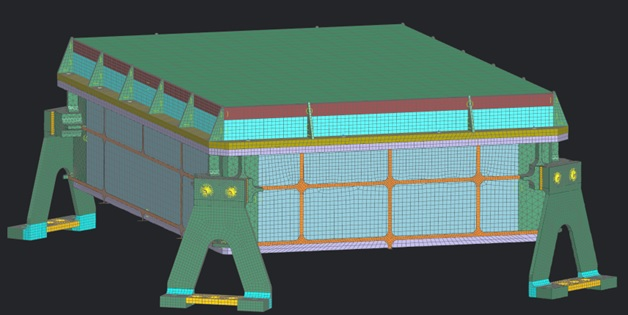
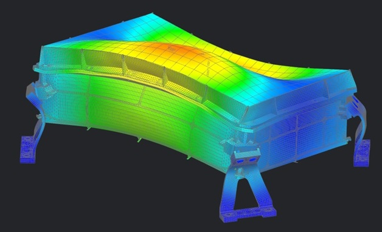

SpaceWorks Level 3
Structural Analysis
This course was a bit different from the others in that there were no groups created for the project, everything was done solo. In this class, students were taught how to idealize and mesh CAD part files using Siemens NX as well as how to perform structural analysis simulation tests on them.
Three Small Steps
Idealization
This section was a bit difficult to master because I needed to understand what the program does and doesn't like to work with when meshing. I found that the key to a good idealization is to cut away areas that look structurally insignificant, and reduce simple supporting structures to 2D midsurfaces to reduce computational load.
In the end, I was able to get a good grasp of how things are done and I'm confident that I can repeat the process in a timely manner for future parts.
Meshing
Meshing was another difficult process to understand because, at first, a lot of the errors that NX throws back at you are vague and hard to decipher. After some time, though, I was able to get a proper grasp of how things worked.
I used a blend of 2D midsurface meshing and 3D quadrilateral meshing, with some small applications of 3D tetrahedral meshing in areas with complex geometry.
Simulation
This part can take some time to complete. Not because of the amount of work required by the user, but rather by the computer.
I also learned how to properly determine what's wrong with a part's meshing or idealizaion based on the results provided by the simulation. Initially, I found that random parts would "fly away" from the assembly, which produced bad data. I found that this was caused by the program not properly applying mesh mating conditions between the sectioned elements to each part.